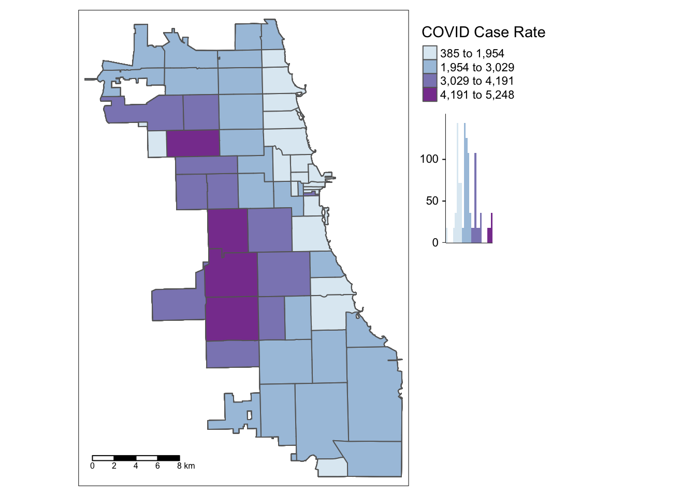
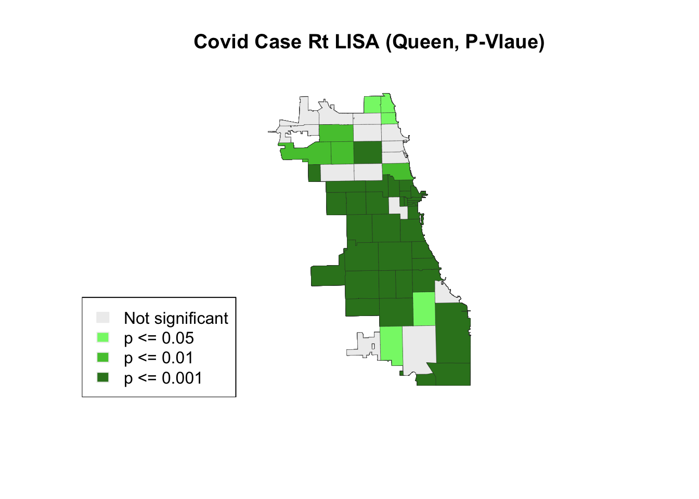

3 Spatial Cluster Detection
Exploratory Spatial Data Analysis requires us to review the variable of interest multiple ways, with different methods, to detect patterns and uncover interesting trends. However, our minds are wired to see patterns, whether or not they are (statistically) there.
In this chapter, we’ll test the COVID regional pattern we identified previously for statistically significant spatial clustering (or outlier) behavior. Our null hypothesis is spatial randomness; if the LISA (local indicator of spatial autocorrelation) for an area is high and statistically significant, we’ve identified a “hot spot” spatial cluster. (In other words, that area and it’s neighbors have higher rates of COVID cases, when compared to a spatially random map.) If the area has a low and statistically significant finding, it’s also a spatial cluster, but a cold spot. We can also detect spatial outliers, as discussed in the workshop. How we define neighbors will influence our findings.
3.1 Identify Pattern
Let’s look at the most stable choropleth map from the last exercise. If you took a break, you’ll need to reload your two main libraries, sf and tmap for spatial data wrangling and detection. Try to practice spatial I/O by loading in your merged Zip-Code level dataset.
library(sf)
library(tmap)
Chi_Zipsf <- st_read("data/ChiZipMaster.geojson")## Reading layer `ChiZipMaster' from data source
## `/Users/maryniakolak/Code/Intro2RSpatialMed/data/ChiZipMaster.geojson' using driver `GeoJSON'
## Simple feature collection with 1080 features and 31 fields
## Geometry type: MULTIPOLYGON
## Dimension: XY
## Bounding box: xmin: -87.87596 ymin: 41.64454 xmax: -87.52414 ymax: 42.02304
## Geodetic CRS: WGS 84After inspecting your dataset again, map your variable of interest, Cumulative Covid Case Rate, developed previously.
# head(Chi_Zipsf)
tm_shape(Chi_Zipsf) +
tm_polygons("Case.Rate...Cumulative",
style="jenks", pal="BuPu",
legend.hist=T, n=4,
title = "COVID Case Rate", ) +
tm_scale_bar(position = "left") +
tm_layout(legend.outside = TRUE, legend.outside.position = "right")
We found that multuple areas on the West Side of Chicago persistently emerged as having higher case rates for this week of interest in our dataset. Is this a statistically significant finding, though?
3.2 Load rGeoda
Next, we’ll load a brand new library,rgeoda. This library wraps core functions of GeoDa, an open source spatial statitical software developed by Luc Anselin’s team. Lead developer Xun Li brought over key functions to packages for various platforms, including R.
Install the package, if you haven’t done so already, and load. For more details and troubleshooting tips, check out the documentation at https://geodacenter.github.io/rgeoda/.
# install.packages("rgeoda)
library(rgeoda)3.3 Define W
Next, we’ll generate multiple spatial weightws for comparison and hypothesis generation. A more local spatial neighbor weight, like rook, will assume less interaction/influence across space. When we create a queen contiguity weight with 2 orders, meaning influence may be up to 2 neighbors away, we specify that lower orders are also included.
w.rook <- rook_weights(Chi_Zipsf)
w.queen <- queen_weights(Chi_Zipsf)
w.queen2 <- queen_weights(Chi_Zipsf, order = 2, include_lower_order = TRUE)3.4 Calculate LISA
Next, we calculate our Local Moran’s I (LISA). The default assumes 999 permutations; we can try 499 permutations for one case to compare results
lisa.rook <- local_moran(w.rook, Chi_Zipsf['Case.Rate...Cumulative'], permutations = 999)
lisa.queen2 <- local_moran(w.queen2, Chi_Zipsf['Case.Rate...Cumulative'], permutations = 999)
lisa.queen2.449 <- local_moran(w.queen2, Chi_Zipsf['Case.Rate...Cumulative'], permutations = 449)3.5 Map the LISA
Here, we extract sample code directly from the library tutorial to visualize LISAs. Explore the output on your own to determine how you might 1) attach LISA values or clusters to the master file, and 2) visualize using a different library
lisa_colors.rook <- lisa_colors(lisa.rook)
lisa_labels.rook <- lisa_labels(lisa.rook)
lisa_clusters.rook <- lisa_clusters(lisa.rook)
plot(st_geometry(Chi_Zipsf),
col=sapply(lisa_clusters.rook, function(x){return(lisa_colors.rook[[x+1]])}),
border = "#333333", lwd=0.2)
title(main = "Covid Case Rt LISA (Rook)")
legend('bottomleft', legend = lisa_labels.rook, fill = lisa_colors.rook, border = "#eeeeee")Next, we visualize with a 2nd order queen contiguity spatial weight.
lisa_colors.queen <- lisa_colors(lisa.queen2)
lisa_labels.queen <- lisa_labels(lisa.queen2)
lisa_clusters.queen <- lisa_clusters(lisa.queen2)
plot(st_geometry(Chi_Zipsf),
col=sapply(lisa_clusters.queen, function(x){return(lisa_colors.queen[[x+1]])}),
border = "#333333", lwd=0.2)
title(main = "Covid Case Rt LISA (Queen)")
legend('bottomleft', legend = lisa_labels.queen, fill = lisa_colors.queen)
Finally, we visualize with a 2nd order queen contiguity spatial weight using fewer permutations.
lisa_colors.queen.499 <- lisa_colors(lisa.queen2.449)
lisa_labels.queen.499 <- lisa_labels(lisa.queen2.449)
lisa_clusters.queen.499 <- lisa_clusters(lisa.queen2.449)
plot(st_geometry(Chi_Zipsf),
col=sapply(lisa_clusters.queen.499, function(x){return(lisa_colors.queen.499[[x+1]])}),
border = "#333333", lwd=0.2)
title(main = "Covid Case Rt LISA (Queen, 499)")
legend('bottomleft', legend = lisa_labels.queen.499, fill = lisa_colors.queen.499)
In this case, using fewer permutations did not change the output, suggesting a stable & robust result. It is best practice to use more permutations when conducting a LISA analysis, though exploration is welcome and encourages.
3.6 Certainty Check
How certain are we that areas identified are persistently clusters or outliers? We can view the significance level of each area to check our certainty – or, uncertainty.
lisa_p <- lisa_pvalues(lisa.queen2)
p_labels <- c("Not significant", "p <= 0.05", "p <= 0.01", "p <= 0.001")
p_colors <- c("#eeeeee", "#84f576", "#53c53c", "#348124")
plot(st_geometry(Chi_Zipsf),
col=sapply(lisa_p, function(x){
if (x <= 0.001) return(p_colors[4])
else if (x <= 0.01) return(p_colors[3])
else if (x <= 0.05) return (p_colors[2])
else return(p_colors[1])
}),
border = "#333333", lwd=0.2)
title(main = "Covid Case Rt LISA (Queen, P-Vlaue)")
legend('bottomleft', legend = p_labels, fill = p_colors, border = "#eeeeee")
3.7 Putting it together
There was a slight change in the “hot spot” cluster when using a rook or 2nd order queen contiguity weight. Explore resource below to look for analytically-driven tips on how to determine an “optimal” setting. More importantly, understanding the phenomenon at hand is crucial for identifying a spatial weight. What are the underlying behaviors, phenomena, and spatial structures you are trying to examine? How would a spatial weight change for measuring exposure of an infectious disease, versus capturing spatially heterogeneous phenomena like redlining that also leave a spatial footprint? Would you use the same spatial weight, or different?